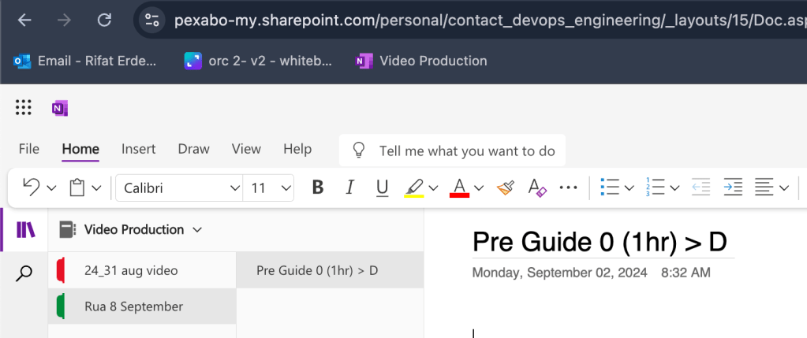
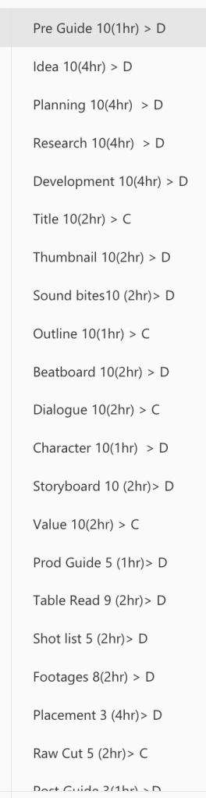

The Journey of Producing a Video: A Behind-the-Scenes Look at My Creative Process
Output
Input
Producing a video is a complex and often time-consuming process. Every step requires careful consideration and a balance between divergent thinking (exploring many possibilities) and convergent thinking (narrowing down to the best ideas). In this blog post, I'll take you through how long each stage took in creating my latest video, highlighting the hours spent in both divergent and convergent phases.
Task
Hours
Converge/Divergence
Pipeline
Idea
4hr
D
PreProd
Planning
4hr
D
PreProd
Research
4hr
DPreProd
Development
4hr
DPreProd
Title
2hr
CPreProd
Thumbnail
2hr
DPreProd
Sound bites
2hr
DPreProd
Outline
1hr
CPreProd
Beatboard
2hr
DPreProd
Dialogue
2hr
CPreProd
Character
1hr
DPreProd
Storyboard
2hr
D
PreProd
Value
2hr
C
PreProd
Prod Guide
0.5hr
D
Prod
Table Read
1.8hr
D
Prod
Shot list
1hr
D
Prod
Footages
1.6hr
D
Prod
Placement
1.2hr
D
Prod
Raw Cut
1hr
C
Prod
Post Guide
0.3hr
D
Post
Review
1.4hr
D
Post
Cuts
1.2hr
D
Post
Render
2hr
D
Post
Publish
1.4hr
C
Post
**Total**
**48hr**
1. Idea Generation
The process began with brainstorming and generating ideas, which took about 4 hours. This stage was all about exploring different possibilities and thinking creatively without constraints. I allowed myself to think freely and jot down every idea that came to mind, no matter how outlandish it seemed.
2. Planning
Planning took another 4 hours and involved organizing the various ideas into a feasible project. This phase required thinking broadly about how the ideas could be turned into a structured plan, allowing room for creativity and flexibility.
3. Research
Research was a critical phase where I spent 4 hours gathering information, references, and materials that could support the video. This was another divergent step, as I needed to explore a wide range of sources to build a solid foundation for the content.
4. Development
The development stage, which took another 4 hours, was where I began to flesh out the ideas more concretely, focusing on developing the main themes and narratives of the video.
5. Title Creation
Creating a compelling title was a more convergent task that took about 2 hours. This step required narrowing down all the possible titles to the one that best captured the essence of the video.
6. Thumbnail Design
Designing a thumbnail was another divergent task that took 2 hours. It involved experimenting with various designs to find one that would effectively attract viewers' attention.
7. Sound Bites Selection
Selecting sound bites was a divergent task that took 2 hours. This involved going through various options to choose the most impactful clips for the video.
8. Outline Creation
Drafting an outline was a convergent process that took 1 hour. This step involved organizing all the ideas and research into a structured format to guide the rest of the production.
9. Beatboard Development
Creating a beatboard, a visual representation of the video's pacing and structure, took 2 hours. This was another divergent step as it required exploring different visual styles and pacing options.
10. Dialogue Writing
Writing dialogue was a convergent task that took 2 hours. Here, I focused on refining the script, ensuring that it was engaging and concise.
11. Character Design
Designing characters, a 1-hour divergent task, involved exploring various character styles and attributes to find the most fitting ones for the video.
12. Storyboard Creation
Storyboarding was a divergent process that took 2 hours. It required sketching out different scenes to visualize the flow and key moments of the video.
13. Value Proposition
Defining the value proposition was a convergent task that took 2 hours. This step was about pinpointing the unique selling points of the video to ensure it would stand out.
14. Production Guide
Creating a production guide took 1 hour and was a divergent process where I explored different approaches to filming and directing.
15. Table Read
Conducting a table read, where I went through the script with a focus on performance and timing, took 2 hours. This step involved testing different deliveries and pacing.
16. Shot List Creation
Making a shot list, a document outlining each shot needed for the video, took 2 hours. This was a divergent task as it required exploring various angles and compositions.
17. Footage Gathering
Gathering all the necessary footage took 2 hours and involved sourcing a variety of clips to ensure the video had a rich visual appeal.
18. Placement
Placement, a 4-hour divergent task, was about deciding where each piece of content would fit within the video. This involved experimenting with different arrangements to achieve the best flow.
19. Raw Cut
Creating the raw cut was a convergent process that took 2 hours. This step involved piecing together the initial footage to create a rough version of the video.
20. Post-Production Guide
Developing a post-production guide took 1 hour and involved outlining the steps needed to refine the video, from editing to color correction.
21. Review
Reviewing the footage and making adjustments took 2 hours. This divergent phase involved exploring different editing techniques and making necessary changes.
22. Final Cuts
Making final cuts, another 2-hour divergent task, involved trimming and refining the video to ensure it was concise and impactful.
23. Render (5 hours - Divergent)
Rendering the video, a 4-hour process, was a divergent task that involved exploring different rendering settings to achieve the best quality.
24. Publishing (7 hours - Convergent)
Finally, publishing the video took 2 hours. This convergent step was about finalizing the video and getting it ready for the audience.
Total Time Spent: Throughout this production, I spent numerous hours balancing between divergent and convergent thinking. Divergent tasks accounted for most of the creative exploration and experimentation, while convergent tasks helped narrow down these explorations into a coherent final product. This process underscores the importance of flexibility and adaptability in video production.
I hope this breakdown provides insight into the behind-the-scenes efforts that go into creating a video. It's a journey that requires patience, creativity, and a willingness to explore various avenues before settling on the final path.
Recalculated Hours Summary:
-
PreProd: 32 hours
-
Prod: 7.1 hours
-
Post: 6.3 hours
To provide a breakdown by "Converge" (C) and "Divergence" (D), I'll sum up the hours separately for each type within all phases.
Breakdown by "Converge" (C) and "Divergence" (D):
-
Converge (C) tasks:
-
Title: 2 hours (PreProd)
-
Outline: 1 hour (PreProd)
-
Dialogue: 2 hours (PreProd)
-
Value: 2 hours (PreProd)
-
Raw Cut: 1 hour (Prod)
-
Publish: 1.4 hours (Post) Total Converge (C) hours:
(2 + 1 + 2 + 2 + 1 + 1.4 = 9.4) hours -
Divergence (D) tasks:
-
Idea: 4 hours (PreProd)
-
Planning: 4 hours (PreProd)
-
Research: 4 hours (PreProd)
-
Development: 4 hours (PreProd)
-
Thumbnail: 2 hours (PreProd)
-
Sound bites: 2 hours (PreProd)
-
Beatboard: 2 hours (PreProd)
-
Character: 1 hour (PreProd)
-
Storyboard: 2 hours (PreProd)
-
Prod Guide: 0.5 hours (Prod)
-
Table Read: 1.8 hours (Prod)
-
Shot list: 1 hour (Prod)
-
Footages: 1.6 hours (Prod)
-
Placement: 1.2 hours (Prod)
-
Post Guide: 0.3 hours (Post)
-
Review: 1.4 hours (Post)
-
Cuts: 1.2 hours (Post)
-
Render: 2 hours (Post) Total Divergence (D) hours:
(4 + 4 + 4 + 4 + 2 + 2 + 2 + 1 + 2 + 0.5 + 1.8 + 1 + 1.6 + 1.2 + 0.3 + 1.4 + 1.2 + 2 = 39.6) hours
Recalculated Hours Summary by Converge/Divergence:
-
Converge (C): 9.4 hours
-
Divergence (D): 39.6 hours
This breakdown shows the total hours spent on tasks categorized as either "Converge" or "Divergence".
New Section > New Video Retry and set it to 4 minute output max 24 hours input >>> have sunday ready for the family!

Set your structure

Imported from rifaterdemsahin.com · 2024